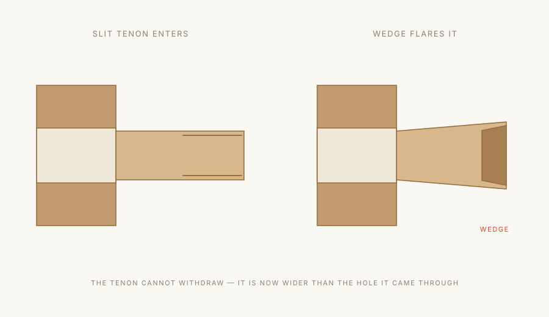

The craft
How a Bronze Age piece is held together.
There is no metal in any joint we cut. What follows is exactly how that is possible — the three principles we work to, and how each one is applied to a bed, a table and a chair.
Kigumi & Sashimono木組・指物
Interlocking geometry, cut by hand measurement
Kigumi is the framing joinery of Japanese timber architecture; sashimono is its cabinetmaking cousin, where the same logic is worked at furniture scale and to furniture tolerances.
Both depend on precise hand measurement rather than on adhesive or fastening. Members are cut so they interlock — each one capturing the next — and the assembly holds its geometry because of how the parts are shaped, not because of what has been driven through them.
The reason this matters in practice is humidity. Oak moves. A board 900mm wide can change 6–8mm across its width between a humid August and a dry February. A rigid metal fixing resists that movement until something gives — usually the wood, in the form of a split. Interlocking joinery is laid out to let the timber expand and contract along known paths while staying locked in the directions that matter structurally.


Kigoroshi木殺し
Wood crushing — a joint that tightens after assembly
Literally ‘killing the wood’. The craftsman cuts the tenon deliberately larger than the mortise it has to enter — in our shop, around 0.4mm proud on each cheek.
The tenon will not fit. So the fibres are compressed with a hammer, worked down until the tenon slides. It is driven home while still crushed, and then it is left alone.
Over the following hours and days the compressed fibres take up ambient moisture and swell back towards their original dimension — but now they are inside the mortise, and the only place they can expand into is the mortise wall. The joint becomes tighter than it could ever have been cut. It is, in the most literal sense, a joint that finishes itself.
Kusabi楔
The wedged tenon — mechanically impossible to withdraw
Where a joint has to resist being pulled apart — a bed rail, a table stretcher, a stool leg — we use kusabi.
The tenon passes right through its mortise and stands proud on the far side. Slits have been cut into that protruding end. A small tapered oak wedge is driven into each slit, flaring the end of the tenon outwards until it is wider than the hole it came through.
The result behaves like a dovetail formed after assembly: the joint cannot withdraw in its principal direction. It is also completely serviceable. Two decades on, if the oak has settled at all, the wedge takes one more tap and the joint is new again. Knock the wedge back out and the piece comes apart for moving.

Application
Where each principle goes.
- Beds
- Platform frames use interlocking corner joints and notched cross-beams in the nuki style, where downward body weight forces the frame components to lock tighter into each other rather than wobble. The side rails pass through the posts and are wedged outside them; the load of a sleeping body presses on the bearing face of the through-mortise, which is precisely the surface that would have to fail for the joint to loosen.
- Tables
- Apron-to-leg connections use angled mortise-and-tenon configurations reinforced with hidden keys or pins, preventing the lateral wobble that comes from daily use — leaning, pushing back from the table, dragging it a few centimetres to sweep. Tops are never fixed rigidly: they are held on buttons or slotted keys that let the panel move across its width by up to 6mm a year without stressing the frame.
- Chairs
- The highest-stress joints in any chair are where the seat meets the backrest and the legs. These employ pinned or keyed blind tenons that withstand shifting pressure and tension without loosening. Where we can, we remove the joint altogether — the Kake armchair's arms and front legs are cut from a single blank, so the load path from armrest to floor never crosses a joint at all.
Material
One timber. One finish.
European oak, kiln-dried to 8–10% moisture content and then rested in our shop for a further six weeks before it is cut. Quartersawn for tops where flatness matters most; through-and-through elsewhere, because the figure is worth having.
Finished in hardwax oil, matt, applied in two coats and cut back by hand between them. Nothing sits on the surface as a film. You are touching oak, not lacquer — which is also why a scratch can be spot-repaired in ten minutes rather than requiring the whole panel to be stripped.
Care
What it asks of you.
Everyday
Spills and marks
Once a year
Seasonal movement
If a joint ever moves
Cut it right and the wood does the rest.